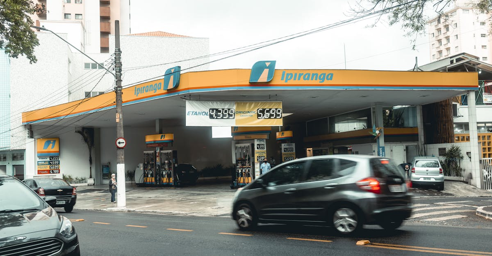

Le Centenaire Aigre-Doux de Lufthansa : Une Fête sous Surveillance
La semaine dernière, Deutsche Lufthansa AG célébrait son centenaire avec une faste digne de son rang. Le soleil était au rendez-vous, des hôtesses en uniformes vintage impeccables accueillaient les convives, et le PDG Carsten Spohr rayonnait sur scène aux côtés du Chancelier allemand Friedrich Merz. Une image parfaite, n'est-ce pas ? Pourtant, derrière les sourires et les festivités, les investisseurs avisés, et leurs agents IA, avaient bien peu de raisons de sabrer le champagne. L'article de Bloomberg Markets, « Lufthansa’s 100th Birthday Bash Leaves Little Cause for Cheers », a mis en lumière cette dichotomie frappante entre l'apparat public et une réalité financière bien plus nuancée. Le secteur aérien, par nature, est un environnement de forte volatilité, soumis à des cycles économiques, des chocs géopolitiques et des contraintes opérationnelles sans précédent. Pour une compagnie aérienne, même centenaire, la longévité n'est pas synonyme de tranquillité financière.
👉 À lire : Carburant Australie: Le plein est fait, la sérénité revient
Ce paradoxe entre une histoire glorieuse et un présent semé d'embûches soulève des questions fondamentales pour quiconque s'intéresse à l'investissement intelligent. Comment évaluer une entreprise qui, malgré son prestige et son héritage, fait face à des défis structurels profonds ? Est-ce que la marque seule suffit à justifier un investissement, ou faut-il creuser bien plus profondément dans les bilans, les perspectives de croissance et les risques inhérents ? La complexité de ces dynamiques dépasse souvent la capacité d'analyse humaine, rendant la prise de décision particulièrement ardue. C'est précisément dans ce genre de scénarios complexes que l'approche d'une épargne intelligente, augmentée par l'IA, révèle toute sa puissance. Plutôt que de se laisser influencer par le faste d'une célébration, l'IA analyse froidement les données, les tendances et les signaux faibles, offrant une perspective dénuée d'émotion, essentielle pour des placements optimisés 24h/24.
👉 À lire : Chômage US : La baisse des demandes favorise l'épargne IA
Les Vents Contraires Post-Pandémiques et Structurels : Au-delà du Ciel Bleu
Le secteur aérien a été l'un des plus durement touchés par la pandémie de COVID-19, et sa reprise est loin d'être un long fleuve tranquille. Lufthansa, comme beaucoup de ses pairs, a dû faire face à des défis opérationnels majeurs. Les pénuries de personnel, notamment chez les pilotes, le personnel de cabine et les bagagistes, ont entraîné des annulations massives et des retards, grevant la satisfaction client et, in fine, la réputation et les revenus. Ces problèmes ne sont pas conjoncturels ; ils révèlent des faiblesses structurelles exacerbées par des années de rationalisation des coûts. De plus, la concurrence est plus féroce que jamais. Les compagnies aériennes à bas coûts continuent de grignoter des parts de marché sur les routes européennes, tandis que les géants du Moyen-Orient et d'Asie dominent les liaisons long-courriers, souvent avec le soutien de leurs gouvernements. Ce paysage concurrentiel intense rend toute augmentation de prix difficile, même face à des coûts croissants.
Les relations avec les syndicats constituent un autre point de friction constant. Les grèves sont devenues monnaie courante, paralysant les opérations et coûtant des millions d'euros à la compagnie. Les revendications salariales sont légitimes dans un contexte d'inflation, mais elles pèsent lourdement sur la masse salariale, qui est déjà l'un des postes de dépenses les plus importants pour une compagnie aérienne. Comme le souligne Dr. Éléonore Dubois, analyste spécialisée en transport aérien,
« Le secteur est pris entre le marteau de la demande fluctuante et l'enclume des contraintes opérationnelles et sociales, un équilibre précaire pour toute entreprise, même centenaire. La capacité à naviguer ces eaux tumultueuses est le véritable test de résilience. »Pour les investisseurs, ces facteurs représentent un risque non négligeable. L'Agent IA d'Epargne IA, par exemple, serait en mesure d'analyser non seulement les données financières brutes, mais aussi les indicateurs de sentiment autour des négociations syndicales, les volumes d'annulations de vols et les tendances des prix des billets, pour anticiper l'impact sur la performance future et ajuster les stratégies d'investissement en conséquence.
La Pression des Coûts et la Transition Énergétique : Le Prix de l'Altitude
Au-delà des défis opérationnels, Lufthansa est confrontée à une double peine en matière de coûts. D'une part, les prix du carburant, bien que fluctuants, restent un facteur de coût majeur et imprévisible. Les compagnies aériennes sont extrêmement sensibles aux variations des cours du pétrole, et même les stratégies de couverture ne peuvent éliminer entièrement ce risque. L'inflation généralisée, d'autre part, affecte tous les aspects de l'activité, de la maintenance des avions aux services au sol, en passant par les fournitures et les salaires. Cette augmentation des dépenses réduit mécaniquement les marges, rendant la rentabilité plus difficile à atteindre et à maintenir.
Mais le défi le plus structurant et le plus coûteux est sans doute la transition énergétique. Le secteur aérien est sous pression croissante pour réduire son empreinte carbone. Les objectifs de décarbonation sont ambitieux et nécessitent des investissements colossaux. Cela implique l'acquisition de nouvelles flottes d'avions plus économes en carburant, mais surtout le développement et l'utilisation de Carburants d'Aviation Durables (SAF), dont le coût est actuellement bien supérieur à celui du kérosène fossile. Les réglementations environnementales se durcissent en Europe, imposant des quotas et des taxes carbone qui augmentent encore la facture. Comment une compagnie peut-elle maintenir sa rentabilité tout en finançant une transformation aussi radicale et coûteuse ? C'est une question à un milliard de dollars, ou plutôt à plusieurs milliards d'euros pour Lufthansa.
« La décarbonation n'est pas une option, c'est une nécessité, » affirme M. Jean-Luc Moreau, spécialiste en finance verte. « Mais le coût de cette transition est immense et pèsera sur les bilans des compagnies aériennes pendant des décennies. Les investisseurs doivent intégrer cette réalité dans leurs modèles d'évaluation. »L'Agent IA d'Epargne IA excelle à intégrer ces facteurs macroéconomiques et sectoriels complexes. Il ne se contente pas d'analyser les résultats passés, mais projette les coûts futurs liés aux SAF, aux investissements dans la flotte et aux taxes carbone, offrant une vision prospective cruciale pour des décisions d'investissement éclairées et adaptées aux enjeux de demain.

La Volatilité du Marché et la Perception des Investisseurs : Entre Espoir et Prudence
Face à ces vents contraires, la performance boursière de Lufthansa a été, sans surprise, marquée par la volatilité. L'action a connu des hauts et des bas significatifs, reflétant l'incertitude du marché face aux défis mentionnés. Après une chute brutale pendant la pandémie, la reprise a été inégale, et le titre reste sous la pression des doutes des investisseurs quant à sa capacité à générer des profits stables et durables. Les analystes financiers, souvent divisés, émettent des recommandations allant de l'achat à la vente, illustrant la difficulté à anticiper la trajectoire de la compagnie.
La perception des investisseurs est un facteur clé. Un centenaire est une occasion de se remémorer le passé, mais le marché regarde toujours vers l'avenir. Et cet avenir, pour Lufthansa, est teinté d'incertitudes : la menace d'une récession, la persistance de l'inflation, les tensions géopolitiques mondiales (qui peuvent impacter le trafic aérien et les prix du carburant), et la pression environnementale croissante. Les investisseurs traditionnels, souvent influencés par les gros titres ou les événements ponctuels, peuvent avoir du mal à synthétiser cette masse d'informations contradictoires. Comment distinguer le bruit du signal dans un tel environnement ? La tentation de vendre à la première mauvaise nouvelle ou d'acheter sur un élan d'optimisme peut être forte, mais rarement fructueuse à long terme.
Comparée à d'autres secteurs moins cycliques ou moins exposés aux chocs externes, l'industrie aérienne apparaît comme un investissement à haut risque. Cela ne signifie pas qu'il n'y a pas d'opportunités, mais qu'elles sont plus complexes à identifier et nécessitent une analyse approfondie et continue. C'est ici que la supériorité des outils d'investissement automatisé par IA se manifeste. L'Agent IA, par sa capacité à traiter des millions de points de données en temps réel, à analyser le sentiment du marché, et à anticiper les réactions aux événements, offre une vision panoramique et dénuée de biais émotionnels, permettant de prendre des décisions d'investissement plus rationnelles et plus résilientes face à la volatilité.
L'Analyse Prédictive : Le Rôle Crucial de l'IA pour les Investisseurs Avertis
Dans ce contexte de complexité et d'incertitude, l'approche traditionnelle de l'investissement atteint ses limites. C'est là que l'intelligence artificielle, et plus particulièrement notre Agent IA, change la donne. Imaginez un système capable d'ingérer et d'analyser en temps réel des volumes massifs de données : les rapports financiers de Lufthansa et de ses concurrents, les fluctuations des prix du pétrole, les prévisions météorologiques impactant les vols, les données sur les réservations et les annulations, les articles de presse, les déclarations des dirigeants, les tendances des réseaux sociaux, et même les indicateurs macroéconomiques mondiaux. L'Agent IA ne se contente pas de compiler ces informations ; il les croise, identifie des corrélations invisibles à l'œil humain et détecte des signaux faibles qui peuvent annoncer des changements majeurs.
Par exemple, une IA peut analyser l'impact combiné d'une légère hausse des prix du carburant, d'une annonce de grève imminente et d'une baisse des réservations sur certaines routes, pour prédire avec une précision accrue l'effet sur le cours de l'action de Lufthansa. Elle peut aussi modéliser différents scénarios, du plus optimiste au plus pessimiste, et évaluer la résilience du portefeuille d'investissement face à chacun d'eux. Si l'investissement traditionnel ressemble à naviguer à vue par temps incertain, l'IA offre un GPS ultra-sophistiqué, intégrant des millions de données en temps réel pour cartographier les courants sous-marins du marché. Notre Agent IA, conçu pour l'épargne intelligente et les placements automatisés, est capable de réagir instantanément aux nouvelles informations, en ajustant les allocations d'actifs pour minimiser les risques et maximiser les opportunités. Il ne se laisse pas emporter par l'euphorie d'un anniversaire ou la panique d'une mauvaise nouvelle, mais s'appuie sur une logique algorithmique rigoureuse.
Cette capacité d'analyse prédictive est inestimable pour les investisseurs. Elle permet non seulement de prendre des décisions plus éclairées, mais aussi de se prémunir contre les biais émotionnels qui sont si courants dans la finance. L'Agent IA optimise votre épargne et vos placements 24h/24, assurant une veille constante et une adaptation proactive aux dynamiques du marché, même dans un secteur aussi imprévisible que l'aérien.

Stratégies d'Épargne Intelligente Face aux Géants en Mutation : Diversifier et Anticiper
Les défis auxquels fait face Lufthansa, malgré son histoire et sa taille, sont une leçon précieuse pour tout investisseur. Ils soulignent l'importance capitale de la diversification et de la prudence. Mettre tous ses œufs dans le même panier, même s'il s'agit d'une compagnie aérienne prestigieuse, est une stratégie risquée. Un portefeuille d'investissement équilibré doit répartir le risque sur différents secteurs, géographies et types d'actifs, pour absorber les chocs spécifiques à une industrie ou à une entreprise.
Au-delà de la diversification classique, l'épargne intelligente et l'investissement automatisé par IA apportent une dimension supplémentaire : la diversification dynamique. L'Agent IA n'alloue pas simplement des fonds à différents secteurs et les laisse en l'état. Il surveille constamment la performance et les perspectives de chaque actif, et peut ajuster les allocations en fonction des évolutions du marché. Si le secteur aérien montre des signes de faiblesse prolongée, l'IA peut réduire l'exposition à ce secteur et rediriger les fonds vers des opportunités plus prometteuses, ou vers des actifs refuges en période de forte incertitude. Cette agilité est un atout majeur pour protéger et faire fructifier votre capital.
« L'ère actuelle exige une agilité que seuls les systèmes augmentés peuvent offrir, » explique le Dr. Marc Lefebvre, expert en fintech. « Les investisseurs qui s'appuient sur des outils comme l'Agent IA ne se contentent pas de suivre le marché, ils s'adaptent et anticipent, transformant les menaces en opportunités. »De plus, l'IA peut identifier des opportunités même au sein de secteurs complexes. Elle pourrait, par exemple, détecter une sous-valorisation temporaire de Lufthansa due à des facteurs ponctuels, ou au contraire, identifier des concurrents plus résilients ou des entreprises qui bénéficient indirectement des difficultés du secteur (par exemple, des fournisseurs de technologies de décarbonation). L'objectif est de ne jamais dépendre d'une seule histoire, même si elle est centenaire, mais de toujours chercher la meilleure allocation de capital pour votre épargne, guidée par des données et une logique implacable.
Conclusion : Naviguer dans les Turbulences avec Sagesse Augmentée
Le centenaire de Lufthansa est un rappel poignant que l'histoire et le prestige ne garantissent pas la sérénité financière. Derrière les festivités se cache une réalité complexe, faite de défis opérationnels, de pressions économiques et de la nécessité impérieuse de se transformer. Pour les investisseurs, cette situation illustre parfaitement la complexité croissante des marchés financiers et la difficulté pour l'humain de prendre des décisions optimales sans un soutien technologique de pointe.
Dans un monde où les compagnies aériennes historiques luttent pour naviguer entre les grèves, les coûts de carburant et la décarbonation, l'épargne intelligente et l'investissement automatisé par IA ne sont plus un luxe, mais une nécessité. Notre Agent IA est précisément conçu pour cela : analyser, anticiper et optimiser vos placements 24h/24, en se basant sur une analyse de données exhaustive et dénuée de biais. Il vous permet de transformer les turbulences du marché en opportunités, en assurant une gestion proactive et résiliente de votre patrimoine.
Alors que Lufthansa entame son deuxième siècle, l'avenir de l'investissement, lui, est déjà écrit : il sera intelligent, automatisé et augmenté par l'IA. Ne laissez pas les fastes d'un anniversaire masquer la réalité économique. Faites confiance à la technologie pour guider votre épargne vers un horizon plus serein et plus profitable.